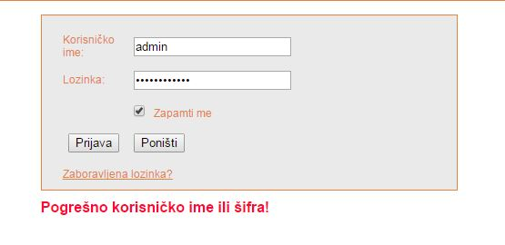
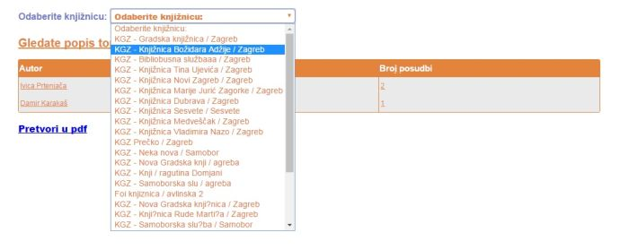
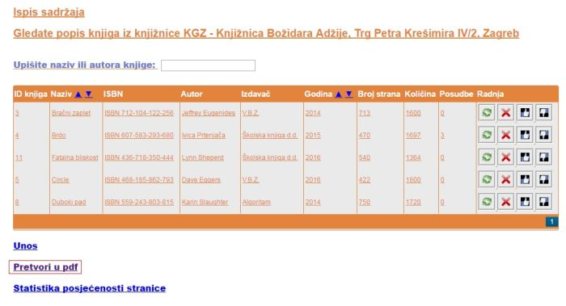
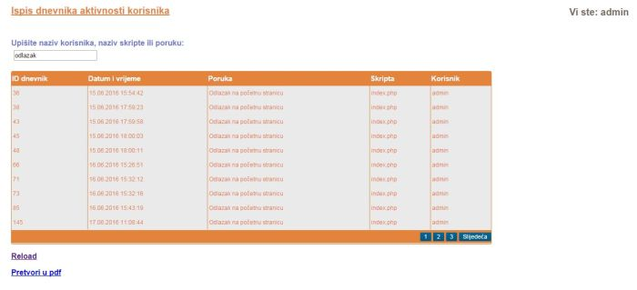

Opis projektnog zadatka :
Bilo je potrebno napraviti sustav koji korisnicima omogućuje uvid u stanje knjižnica te posudbu knjiga od knjižnica, ali i od drugih korisnika. Sustav bi trebao imati 4 uloge. Neregistrirani korisnik, registrirani korisnik tj. član, moderator ili knjižničar i administrator. Glavne funkcionalnosti koje bi sustav trebao imati su registracija korisnika, prijava te odjava sa sustava, posudba knjige os strane knjižnice ali i od drugih korisnika, dodavanje knjiga u sustav od strane moderatora ili administratora, dodavanje knjižnica u sustav te evidencija korištenja aplikacije kojom se koristi samo administrator. Koristiti različite tehnologije u izradi sustava.
Opis projektnog rješenja :
Napravljen je sustav koju korisnicima služi za posudbu knjiga preko aplikacije, a moderatorima i administratorima dodavanje knjiga i knjižnica u isti taj sustav. Sustav ima sve 4 uloge: neregistrirani korisnik, registrirani korisnik ili član, moderator ili knjižničar i administrator.
Prijava na sustav vrši se preko AJAX tehnologije. U slučaju pogrešne prijave, korisniku se ispisuje greška.

Kad se korisnik prijavi, dobiva popis knjižnica gdje može odabrati neku. Odabirom, dobiva popis knjiga iz te knjižnice.

Korisnik ima mogućnost pretvorbe podataka iz tablice u PDF.

Pretraga podataka vrši se također preko AJAX tehnologije. Dakle, korisnik dok pođe upisivati pojam, podaci se automatski ažuriraju kroz tablicu. Također, prilagođava se i brojanje po stranicama kad se vrši pretraga.

Zadovoljene su sve funkcionalnosti poput:
- Za neregistriranog korisnika: registracija na sustav, aktivacija sustava e-mailom sa 24 satnom aktivacijom
- Za registriranog korisnika: uspješna prijava te odjava sa sustava, omogućeno posuđivanje knjiga, pregled knjiga po knjižnicama, login sa Ajax-om
- Za moderatora: unos vlastitih elemenata, potvrda ili odbitak rezervacije, pregled svih knjiga za njegovu knjižnicu te pregled aplikativne statistike
- Za administratora: Otključavanje i blokiranje korisničkog računa, konfiguracija sustava, pregled i pretraživanje dnevnika, dodavanje, pregled i izmjena podataka u tablicama, kreiranje i dodjela moderatora
- WebDiP2015_092
- css
- fpdf
- img
- js
- knjige
- knjiznice
- korisnici
- Recaptcha
ERA model:

Popis skripti:
| Skripta | Opis |
|---|---|
| admin.php | Skripta za konfiguraciju sustava administratora |
| aktivacija.php | Skirpta koja aktivira korisnika |
| baza_class.php | Skripta za bazu |
| clan.php | Skripta za registraciju novog člana |
| clanovi.php | Skripta koja ispisuje sve članove |
| dnevnik.php | Skirpta za prikaz aktivnosti iz dnevnika |
| index.php | Glavna stranica |
| kategorija.php | Skripta za administraciju kategorija |
| kategorije.php | Skripta za ispis kategorija |
| knjiga.php | Skripta za administraciju knjiga |
| knjige.php | Skripta za ispis knjiga |
| knjigetop10.php | Skripta za ispis top 10 knjiga |
| knjiznica.php | Skripta za administraciju knjižnica |
| knjiznice.php | Skripta za ispis knjižnica |
| login.php | Skripta za login formu |
| logiraj.php | Skripta za prijavu |
| lokacija.php | Skripta za odabir lokacije |
| OdaberiKnjiznicu.php | Skripta za odabir popisa knjižnica |
| odjava.php | Skripta za odjavu sa sustava |
| podnozje.php | Skripta za opis podnožja stranice |
| posudbe.php | Skripta za ispis posudbi |
| posudrez.php | Skripta za ispis posudbi i rezervacija |
| rezervacije.php | Skripta za ispis rezervacija |
| session.php | Skripta za provjeru sessiona |
| statistikalike.php | Skripta za statistiku like knjiga |
| statistikalikekateg.php | Skripta za statistiku like kategorija |
| statknjige.php | Skripta za statistiku knjiga |
| VratiClanove.php | Skripta za povrat članova (za AJAX pretragu) |
| VratiKategorije.php | Skripta za povrat kategorija (za AJAX pretragu) |
| VratiKnjige.php | Skripta za povrat knjiga (za AJAX pretragu) |
| VratiKnjiznice.php | Skripta za povrat knjižnica (za AJAX pretragu) |
| VratiPodatkeDnevnika.php | Skripta za podatke dnevnika (za AJAX pretragu) |
| VratiStatistike.php | Skripta za povrat statistika (za AJAX pretragu) |
| zaglavlje.php | Skripta za zaglavlje |
Mapa mjesta:
Navigacijski dijagram: